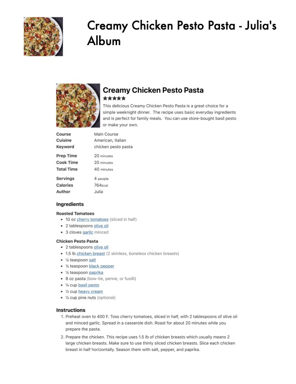

Creamy Chicken Pesto Pasta - Julia's

Original cookbook page 710
Ingredients
- Roasted Tomatoes
- 10 oz cherry tomatoes (sliced in half)
- 2 tablespoons olive oil
- 3 cloves garlic minced
- Chicken Pesto Pasta
- 1.5 lb chicken breast (2 skinless, boneless chicken breasts)
- Y% teaspoon salt
- Ys teaspoon black pepper
- % teaspoon paprika
- 8 oz pasta (bow-tie, penne, or fusilli)
- '% cup basil pesto
- Ye cup heavy cream
- % cup pine nuts (optional)
Instructions
- Preheat oven to 400 F. Toss cherry tomatoes, sliced in half, with 2 tablespoons and minced garlic. Spread in a casserole dish. Roast for about 20 minutes whil prepare the pasta.
- Prepare the chicken. This recipe uses 1.5 Ib of chicken breasts which usually nm large chicken breasts. Make sure to use thinly sliced chicken breasts. Slice eac breast in half horizontally. Season them with salt, pepper, and paprika.
Recipe #710 from collection